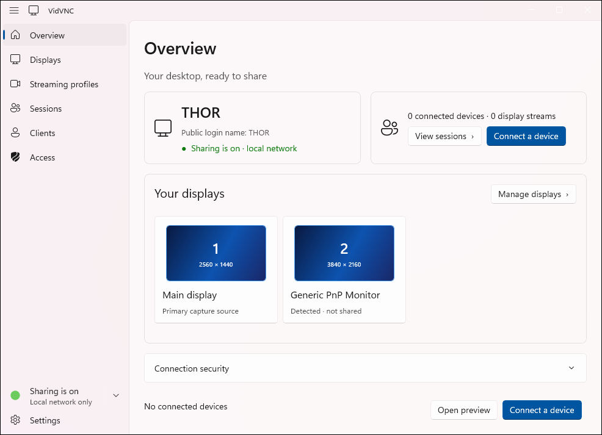
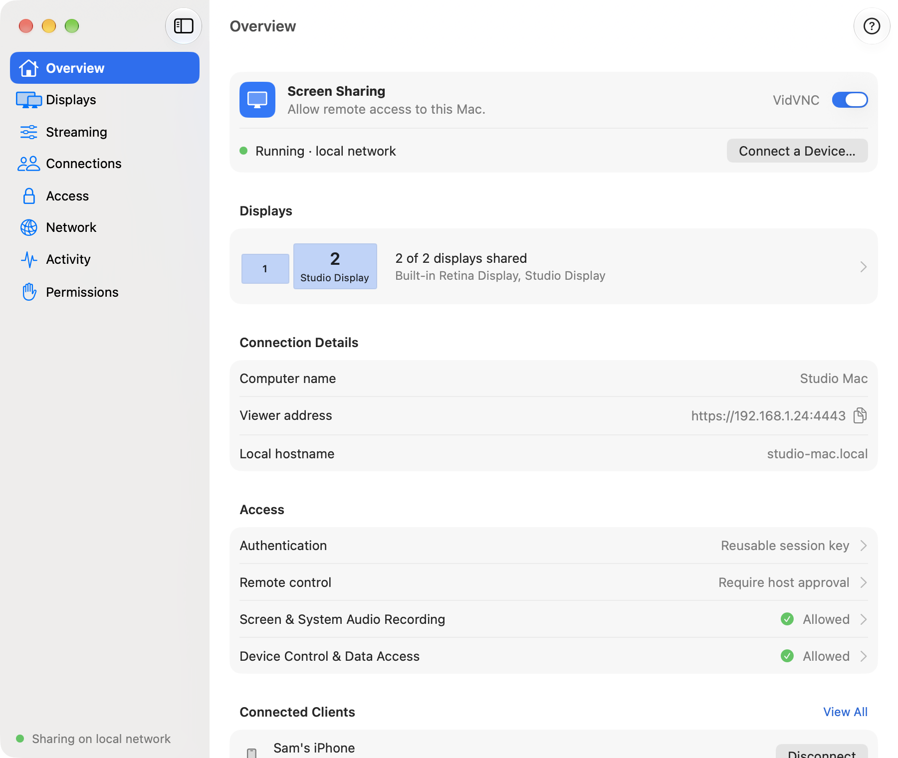
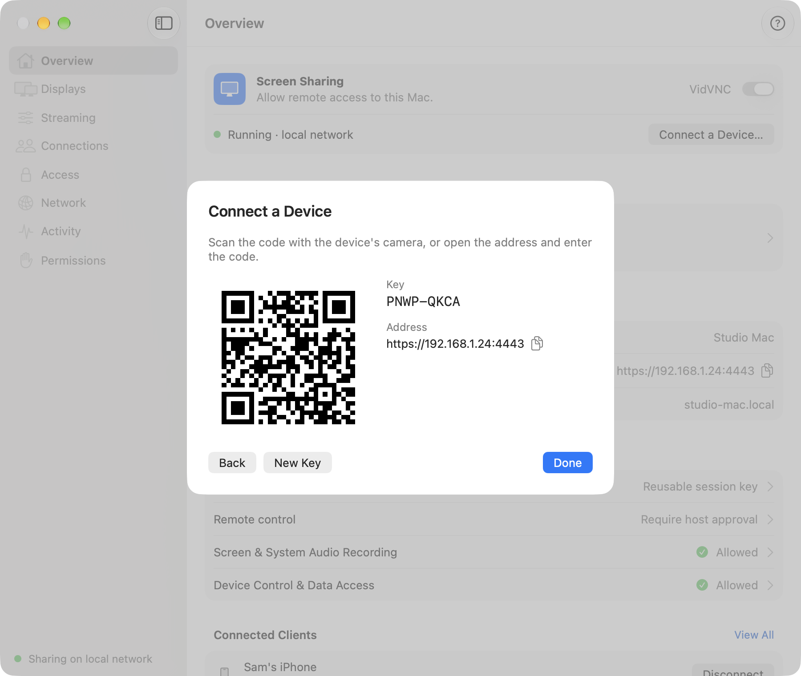

Windows
- Runs on
- Windows 11 25H2 or later, x64
- Capture
- DXGI desktop duplication, WASAPI audio
- Encoding
- H.264, H.265, AV1 on NVIDIA, Intel, AMD
- App
- WinUI 3, keeps sharing from the tray
Development preview · open source under AGPL-3.0
VidVNC streams your Windows PC or Mac with hardware video encoding to a browser on your phone, tablet or another computer, and lets you take control when the host allows it.
No compiled release yet. The first one is on its way.

The GPU does the encoding, the browser does the viewing, and nothing leaves your network unless you set up remote access.
H.264, H.265 and AV1 on NVIDIA, Intel and AMD graphics on Windows, and VideoToolbox on a Mac.
Open the address in a browser. It even works full screen on an iPhone from the Home Screen.
What you hear on the computer plays on the viewer, compressed with Opus, on its own stream.
Keyboard and mouse only after the host grants it, and only one device holds control at a time.
Share one display or several, and choose a streaming profile for resolution, frame rate and codec.
A password, HTTPS with a certificate you can check, and local network only until you turn on remote access.
Each has the VidVNC app and a command-line server, and both share the same browser viewer.



VidVNC is a development preview. Until the first release, build it from source. The README lists everything each platform needs.
git clone https://github.com/kiforsbe/vidvnc
cd vidvnc
npm run deps
npm run build
npm startgit clone https://github.com/kiforsbe/vidvnc
cd vidvnc
npm run deps
./build-native.sh
npm run prepare:host -- Debug
npm run start:host -- Debug